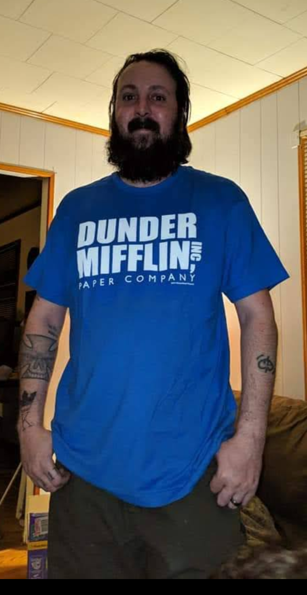

First off, I’m not a bodybuilder. I’m not here to flex on Instagram or push some image. This is just me documenting my own growth—from severely underweight and sickly to finally looking and feeling strong. My starting point was about as low as it gets. I’ve been tall and lanky my whole life, 6’2 and around 130 pounds. People laughed. Family made “jokes” like “get this boy a steak”. Strangers had no problem telling a grown man he’s “too skinny,” though they’d never say that to someone overweight. Those words cut deep, but they also lit the fire I needed.
After surviving liver failure and stage 4 cirrhosis, I realized this was my bonus life. I was done waiting to die. I decided to build myself into the protector and warrior I was meant to be—not a bodybuilder, not a tough guy, just a man who wasn’t weak anymore. The kind of man who could walk with his head up and defend his family.

I started small. One 35-pound rubber-coated dumbbell from Academy. No gym. No coach. Just me in my house, parks, and backyards. I did pull-ups on swing sets and kids’ equipment, curls and presses with that one dumbbell, push-ups, and a ton of walking and jogging. People looked at me funny at the park. I didn’t care.


Training hard is useless if you don’t eat. As a hard gainer, the rule is simple: eat more than you burn. Count your calories, find your baseline, then add 500 more per day.

The first 6 months I trained every single day. Everyone said rest days mattered, but I was desperate to change and my results came fast. My strength exploded. For the first time in my life, I wasn’t fragile. I noticed how weak most men actually are—and how weak I used to be. That version of me? Pathetic. I’m glad I killed him.

I’m not finished. I don’t want to be a bodybuilder, just a strong, capable man who can protect his family and live with confidence. If you’re a hard gainer, my advice is this: stop looking for magic programs. Eat. Train. Sleep. Repeat. Every day you do it, you’re not just building muscle—you’re killing off the weak version of yourself that the world laughs at. That alone is worth it.